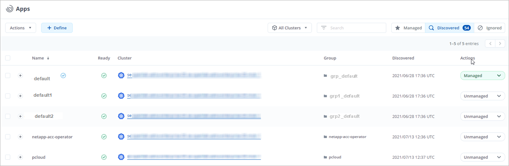
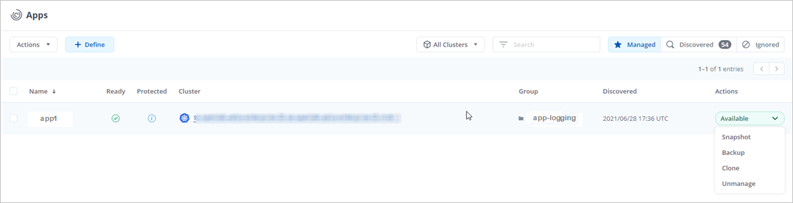
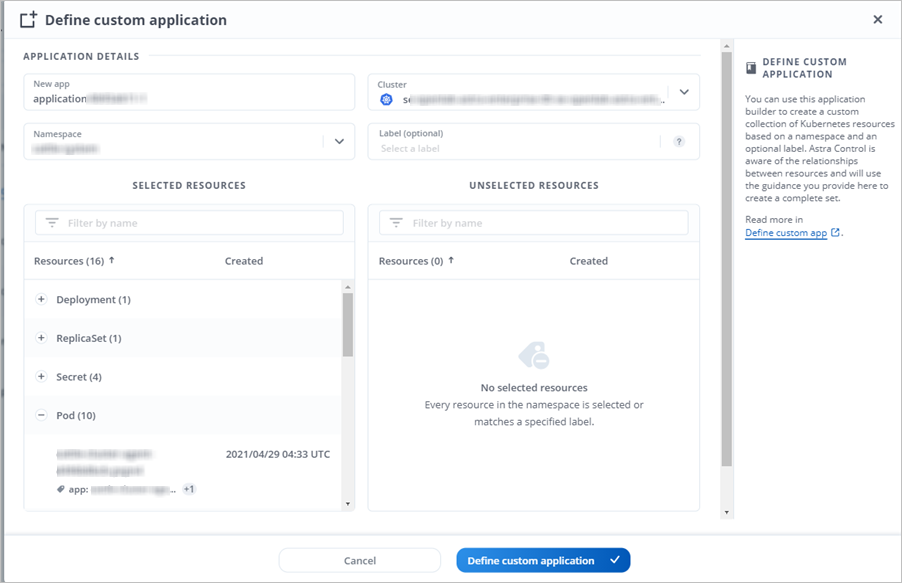
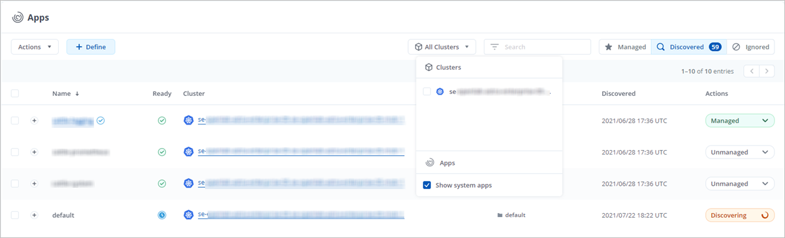

Start managing apps
Contributors
 Download PDF of this page
Download PDF of this page
After you add a cluster to Astra Control management, you can install apps on the cluster (outside of Astra Control), and then go to the Apps page in Astra Control to start managing the apps and their resources.
Install apps on your cluster
Now that you’ve added your cluster to Astra Control, you can install apps or manage existing apps on the cluster. Any app that is scoped to a namespace can be managed. After the pods are online, you can manage the app with Astra Control.
For help with deploying validated apps from Helm charts, refer to the following:
Manage apps
Astra Control enables you to manage your apps at the namespace level or by Kubernetes label.
| Apps deployed with Helm 2 are not supported. |
You can perform the following activities to manage apps:
| Astra Control itself is not a standard app; it is a "system app." You should not try to manage Astra Control itself. Astra Control itself isn’t shown by default for management. To see system apps, use the “Show system apps” filter. |
For instructions on how to manage apps using the Astra API, see the Astra Automation and API information.
| After a data protection operation (clone, backup, restore) and subsequent persistent volume resize, there is up to a twenty-minute delay before the new volume size is shown in the UI. The data protection operation is successful within minutes, and you can use the management software for the storage backend to confirm the change in volume size. |
Manage apps by namespace
The Discovered section of the Apps page shows namespaces and any Helm-installed apps or custom-labeled apps in those namespaces. You can choose to manage each app individually or at the namespace level. It all comes down to the level of granularity that you need for data protection operations.
For example, you might want to set a backup policy for "maria" that has a weekly cadence, but you might need to back up "mariadb" (which is in the same namespace) more frequently than that. Based on those needs, you would need to manage the apps separately and not under a single namespace.
While Astra Control enables you to separately manage both levels of the hierarchy (the namespace and the apps in that namespace), the best practice is to choose one or the other. Actions that you take in Astra Control can fail if the actions take place at the same time at both the namespace and app level.
-
From the left navigation bar, select Apps.
-
Select Discovered.

-
View the list of discovered namespaces. Expand the namespace to view the apps and associated resources.
Astra Control shows you the Helm apps and custom-labeled apps in the namespace. If Helm labels are available, they’re designated with a tag icon.
-
Look at the Group column to see which namespace the application is running in (it’s designated with the folder icon).
-
Decide whether you want to manage each app individually or at the namespace level.
-
Find the app you want at the desired level in the hierarchy, and from the Actions menu, select Manage.
-
If you don’t want to manage an app, from the Actions menu next to the app, select Ignore.
For example, if you want to manage all apps under the "maria" namespace together so that they have the same snapshot and backup policies, you would manage the namespace and ignore the apps in the namespace.
-
To see the list of managed apps, select Managed as the display filter.

Notice the app you just added has a warning icon under the Protected column, indicating that it is not backed up and not scheduled for backups yet.
-
To see details of a particular app, select the app name.
Apps that you chose to manage are now available from the Managed tab. Any ignored apps will move to the Ignored tab. Ideally, the Discovered tab will show zero apps, so that as new apps are installed, they are easier to find and manage.
Manage apps by Kubernetes label
Astra Control includes an action at the top of the Apps page named Define custom app. You can use this action to manage apps that are identified with a Kubernetes label. Learn more about defining custom apps by Kubernetes label.
-
From the left navigation bar, select Apps.
-
Select Define.

-
In the Define custom application dialog box, provide the required information to manage the app:
-
New App: Enter the display name of the app.
-
Cluster: Select the cluster where the app resides.
-
Namespace: Select the namespace for the app.
-
Label: Enter a label or select a label from the resources below.
-
Selected Resources: View and manage the selected Kubernetes resources that you’d like to protect (pods, secrets, persistent volumes, and more).
-
View the available labels by expanding a resource and clicking the number of labels.
-
Select one of the labels.
After you choose a label, it displays in the Label field. Astra Control also updates the Unselected Resources section to show the resources that don’t match the selected label.
-
-
Unselected Resources: Verify the app resources that you don’t want to protect.
-
-
Click Define custom application.
Astra Control enables management of the app. You can now find it in the Managed tab.
Ignore apps
If an app has been discovered, it appears in the Discovered list. In this case, you can clean up the Discovered list so that new apps that are newly installed are easier to find. Or, you might have apps that you are managing and later decide you no longer want to manage them. If you don’t want to manage these apps, you can indicate that they should be ignored.
Also, you might want to manage apps under one namespace together (Namespace-managed). You can ignore apps that you want to exclude from the namespace.
-
From the left navigation bar, select Apps.
-
Select Discovered as the filter.
-
Select the app.
-
From the Actions menu, select Ignore.
-
To unignore, from the Actions menu, select Unignore.
Unmanage apps
When you no longer want to back up, snapshot, or clone an app, you can stop managing it.
| If you unmanage an app, any backups or snapshots that were created earlier will be lost. |
-
From the left navigation bar, select Apps.
-
Select Managed as the filter.
-
Select the app.
-
From the Actions menu, select Unmanage.
-
Review the information.
-
Type "unmanage" to confirm.
-
Select Yes, Unmanage Application.
What about system apps?
Astra Control also discovers the system apps running on a Kubernetes cluster. You can display system apps by selecting the Show system apps checkbox under the Cluster filter in the toolbar.

We don’t show you these system apps by default because it’s rare that you’d need to back them up.
| Astra Control itself is not a standard app; it is a "system app." You should not try to manage Astra Control itself. Astra Control itself isn’t shown by default for management. To see system apps, use the “Show system apps” filter. |
 Edit on GitHub
Edit on GitHub